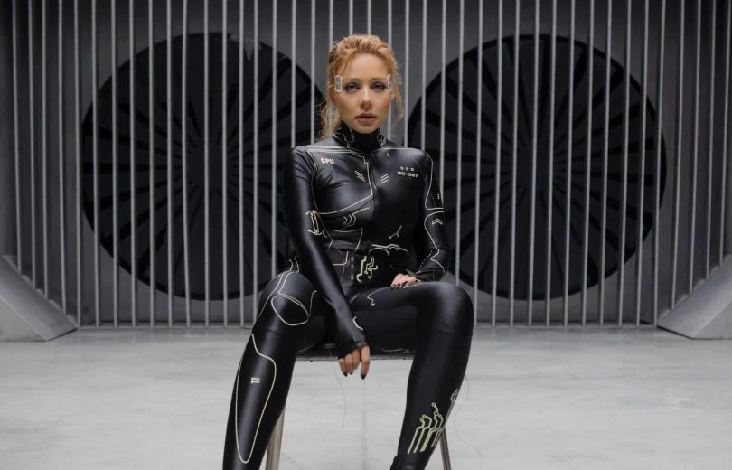
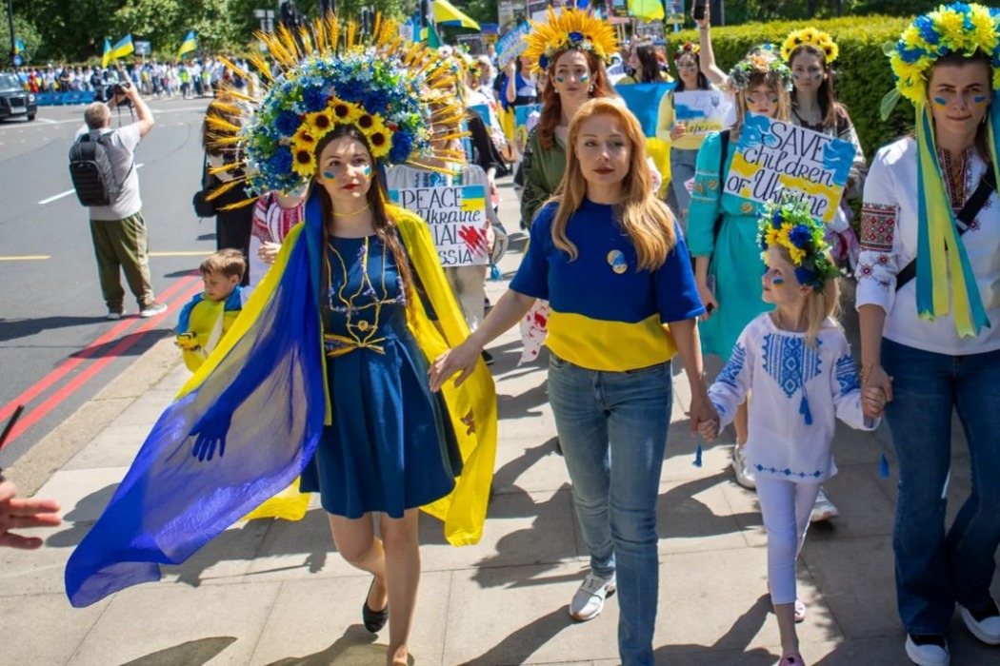

Тина Кароль - укр. Ті́на Ка́роль, имя при рождении Татья́на Григо́рьевна Либерма́н (укр. Тетя́на Григо́рівна Ліберма́н); род. 25 января 1985, Оротукан, Ягоднинский район, Магаданская область, РСФСР, СССР) — украинская певица и актриса, телеведущая, общественный деятель. Народная артистка Украины (2017). Лауреат песенного конкурса «Новая волна» (2005).
Представительница Украины на 51-м песенном конкурсе «Евровидение-2006», которое проходило в Афинах с песней «Show Me Your Love», где заняла седьмое место. Входит в Топ-100 самых влиятельных женщин Украины по версии журнала «Фокус».
Лучшая исполнительница Украины 2014, 2015, 2018 года по версии YUNA. Лучшая исполнительница Украины 2015 и 2017 года по версии M1 Music Awards. Самая популярная женщина Украины по версии компаний Google и Яндекс (2013). Бывший тренер шоу «Голос страны» (2013, 2015—2021) и «Голос. Дети». Экс-ведущая телевизионного шоу «Танцы со звёздами» и «Игра талантов». Диапазон голоса — 4,5 (от фа малой октавы до фа-диез четвертой октавы) октавы.
Татьяна Либерман родилась 25 января 1985 года, в Татьянин день в посёлке Оротукан (Магаданская область) в семье инженеров Григория Самуиловича Либермана, он занимал должность главного конструктора крупной строительной компании и Светланы Андреевны Либерман (в девичестве Журавель), которая работала инженером, а позже устроилась в Пенсионный фонд Украины. Старший брат — Станислав Григорьевич Либерман, юрист, совладелец юридической фирмы в Киеве. Разница в возрасте у Тины с братом составляет четыре года.
Тина Кароль с отцом, матерью и братом
В 1992 году, когда дочери исполнилось семь лет, семья переехала на родину матери, в город Ивано-Франковск (Украина), где Тина начала обучаться в СШ № 22. Кароль призналась, что она часто чувствовала дискриминацию в школе из-за своей еврейской фамилии. Тина свободно владеет украинским и русским языками. Кароль принимала участие в многочисленных молодёжных, региональных конкурсах и фестивалях таких, как: «Спиваночка-Джазочка» (1996), «Золотые трембиты», «Юные звёзды Прикарпатья» (1997), «Таланты твои, Украина» (1998), «Рождественские встречи у Братьев Блюза», «Черноморские игры», «Под одной звездой», «Золотой тик» (1999), «Эдельвейс», «Семь культур» (2001), где представляла Израиль, Первый всеукраинский конкурс артистов эстрады (2002), Новая волна (Юрмала-2005) и многих других. Окончила музыкальную школу № 1 им. Н. Лысенко по классу фортепиано.
С юных лет Тина мечтала о большой сцене, поэтому после 9 класса, в 2000 году, отправилась в Киев, где поступила в высшее музыкальное училище им. Глиэра. Преподаватель пения Татьяна Русова вспоминала, что девушка отличалась не только хорошим вокалом, индивидуальной манерой исполнения, но и непростым характером – всегда открыто высказывала и отстаивала своё мнение. Двери в шоу-бизнес Тине открыл ректор КМАМ им. Глиэpa, композитор Александр Злотник. В 2003 году он утвердил Кароль на роль Маргарет в мюзикле «Экватор», премьера которого состоялась в Киевском театре оперетты. В тот же период за особые успехи в учёбе ей была назначена стипендия Верховной Рады Украины.
В 2004 году окончила Киевское высшее музыкальное училище им. Глиэра по специальности «Эстрадный вокал». По совету своего педагога, прошла кастинг и была принята в качестве солистки в ведущий профессиональный музыкальный коллектив Министерства обороны Украины – ансамбль песни и пляски Вооружённых сил Украины. В 2005 году получила второе высшее образование, окончив заочное отделение факультет «Менеджмента и логистики» Национального авиационного университета (НАУ). В начале музыкальной карьеры взяла себе сценический псевдоним Тина Кароль. Впоследствии официально изменив имя и фамилию.

После военного вторжения России на Украину, 26 февраля певица приняла решение покинуть страну и уехать в Польшу, после того, как у её дома в пригороде Киева прогремели первые взрывы. Вместе с единомышленниками создала Международный центр информационного сопротивления со штаб-квартирой в Варшаве, чтобы освещать события, которые происходят на Украине. В основном, для русскоязычной аудитории из России, Беларуси, Армении и Казахстана.30 марта в городе Варшава прошёл благотворительный концерт в поддержку Украины, где Тина Кароль исполнила Гимн Украины. Все собранные деньги за билеты были переданы Unicef на нужды украинских детей. Мероприятие прошло при поддержке Посольства Украины в Республике Польша в варшавском театре ROMA. 12 апреля в Польше на стадионе «Легии» прошёл благотворительный матч «Match For Peace» в поддержку Украины. На стадионе встретились «Динамо» (Киев) и «Легия» (Варшава). Во время перерыва на футбольном поле спели украинские певицы — Тина Кароль, Надя Дорофеева, Екатерина Павленко (Go_A) и Юлия Санина (The Hardkiss). Кароль спела песню «Україна — це ти», а так же, певицы совместно исполнили композиции «Вільна» и «Червона калина». 22 апреля Тина Кароль выступила на открытии выставки «Это Украина: Защищая свободу», которая входит в официальную программу Венецианской биеннале, где певица спела гимн Украины.
8 мая в Берлине Тина Кароль и посол Украины в Германии Андрей Мельник приняли участие в памятном мероприятии по возложению цветов к мемориалу в Тиргартене по случаю Дня памяти и примирения, а также 77-й годовщины освобождения Европы от национал-социализма. Певица также спела вместе с украинской общиной гимн Украины.
10 мая Тина Кароль с миссией общественного посла, прибыла в Токио (Япония), по приглашению японского бизнесмена и филантропа Хироси Микитани. Кароль выступила в качестве специального гостя на концерте в поддержку Украины, которое состоялось 14 мая, в рамках премии «Rakuten Girls Awards 2022». 15 мая певица посетила Хиросиму, где встретилась с мэром города Кадзуми Мацуи, а также с официальными лицами и дипломатами страны. 19 мая в рамках 75-го Каннского кинофестиваля, состоялся благотворительный вечер организованный «Золотым глобусом» в поддержку украинской киноиндустрии. Тина Кароль стала специальным гостем благотворительного вечера, певица исполнила свою украиноязычную песню «Намалюю тобі зорі».
В августе Тина Кароль стала голосом коллекции украинского бренда Lever Couture, над которой работали дизайнер Леся Верлингьери и креативный директор Леди Гаги, Никола Формикетти. Специально для шоу певица создала электронный мини-альбом «LELEKA», пропитанный украинским этносом и фольклором. Тина Кароль работала над новыми песнями в сотрудничестве с американским диджеем Macro/Micro.

16 сентября Кароль представила новый украиноязычный сингл «Вільні. Нескорені». 23 сентября, на благотворительном вечере в рамках 77-й Генассамблеи ООН которое проходило в Метрополитен-опера в Нью-Йорке, собравшей множество мировых политических и бизнес-лидеров, состоялась презентация Фонда Елены Зеленской. Во время мероприятия на сцене выступили Тина Кароль и Юлия Санина. Певицы исполнили свой украиноязычный хит «Вільна». 30 сентября Тина Кароль презентовала англоязычный альбом «Scandal». В сентябре-октябре 2022 года состоялся североамериканский тур по городам США и Канады. В октябре в рамках благотворительного тура по США выступила вместе с балетом Грега Чапкиса. Коллектив стал специальным гостем концерта в Лос-Анджелесе, где был представлен англоязычный альбом «Scandal».
31 декабря 2022 Тина Кароль приняла участие главном Новогоднем концерте, который состоялся в Берлине у подножья Бранденбургских ворот. Кароль вышла на сцену вместе с легендарной немецкой группой Alphaville. Вместе они исполнили знаменитый хит группы «Forever Young». Концерт проходил под открытым небом и транслировался на немецком телевидении в прямом эфире.